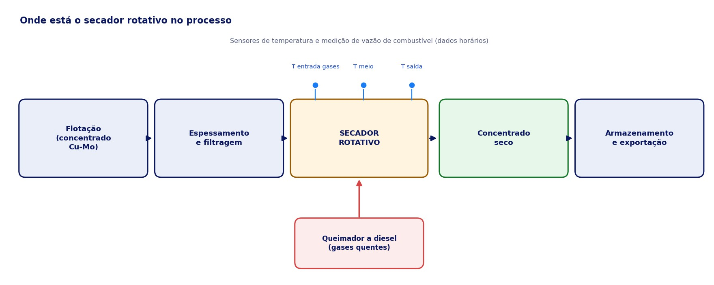
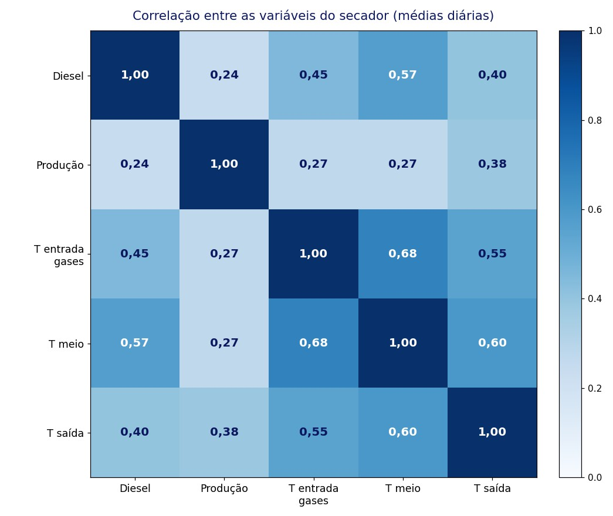
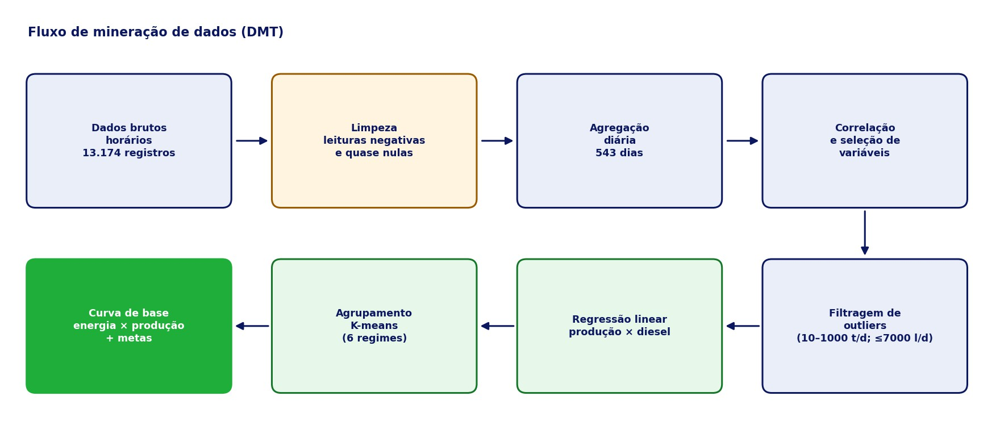
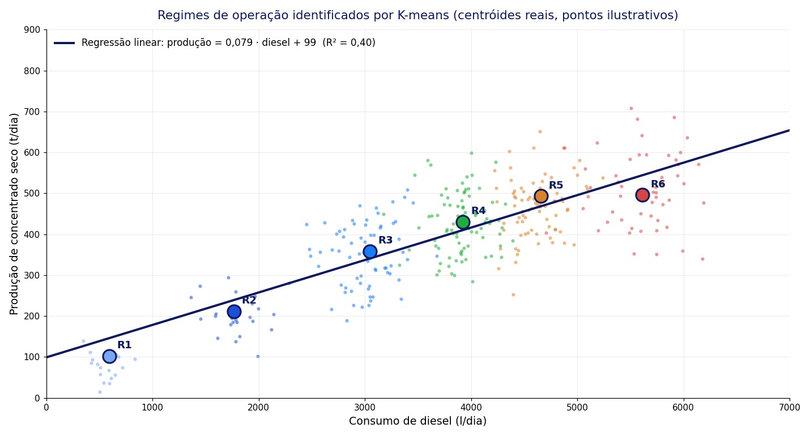
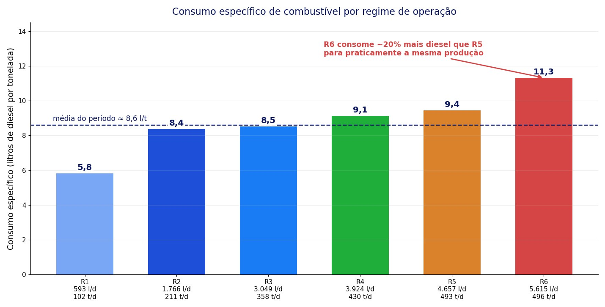
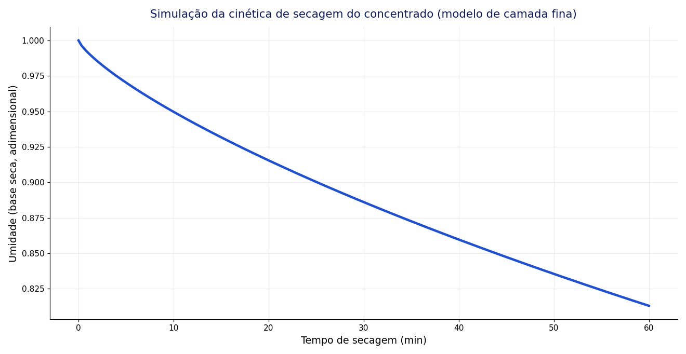
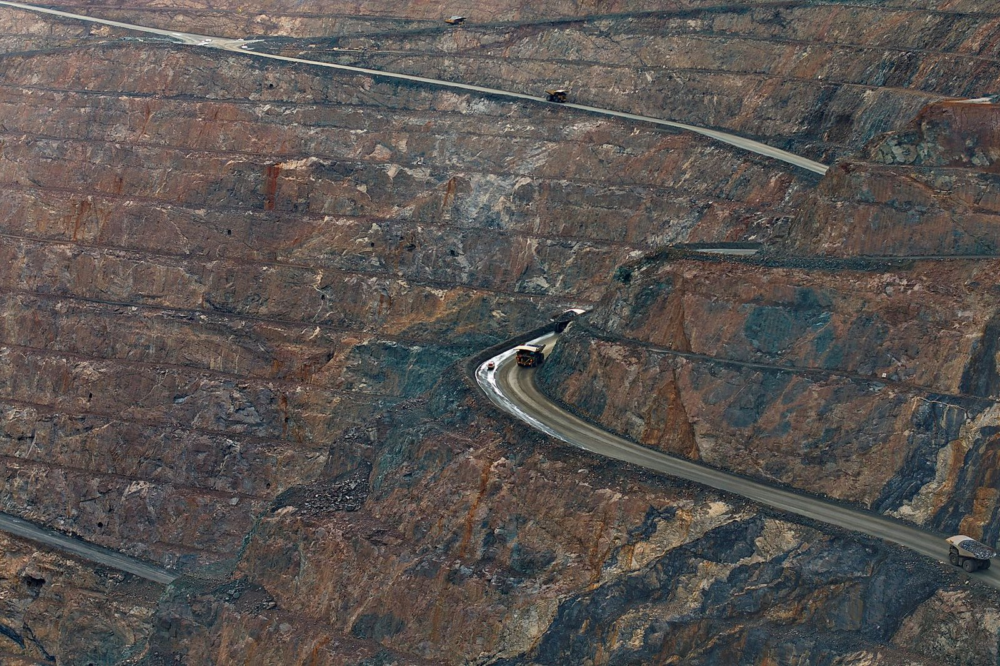
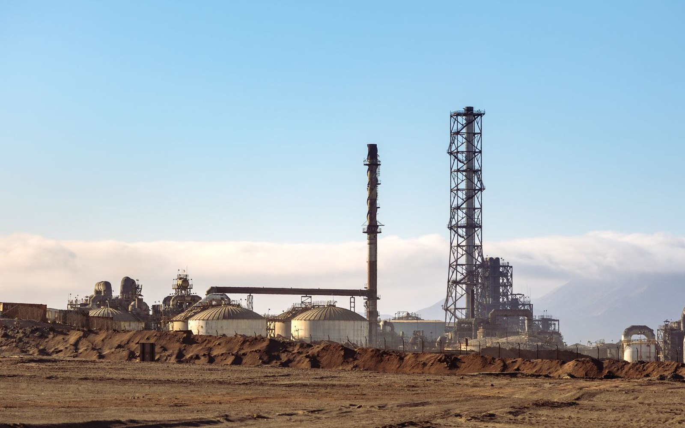

Problema / desafio do cliente
O secador rotativo de concentrado é um dos maiores consumidores de combustível de uma planta de beneficiamento de cobre. O cliente tinha anos de dados de operação registrados, mas não sabia quanto diesel deveria consumir para cada tonelada produzida, nem em que condições o equipamento estava gastando mais do que o necessário.
A GETA foi contratada para uma consultoria de análise e otimização do consumo de combustível: transformar os dados históricos em uma linha de base energética e em oportunidades concretas de economia.
Contexto e características do processo
- Cliente: uma das grandes mineradoras de cobre e molibdênio do norte do Chile.
- No processo, o rejeito seco é misturado com água pressurizada e passa por várias etapas de flotação, que enriquecem o cobre e o molibdênio. O concentrado é secado em um secador rotativo a diesel, armazenado e exportado.
- Base de dados de junho de 2021 a dezembro de 2022: vazão horária de diesel, produção diária de concentrado seco e três pontos de temperatura do secador (entrada dos gases, meio e saída).
- Operação em regime contínuo, com produção média de cerca de 456 t/dia e consumo médio de cerca de 3.900 litros de diesel por dia.

Diagnóstico e dados analisados
- Os dados brutos tinham problemas típicos de sistemas industriais: 665 leituras negativas de vazão de combustível e cerca de 2.400 leituras quase nulas (paradas e falhas de medição), além de lacunas nos registros de temperatura.
- O consumo de diesel e a produção variavam muito de um dia para o outro, sem uma referência clara do que era um consumo "normal".
- A temperatura dos gases na entrada chegava a cerca de 600 a 800 °C, com grandes oscilações, um sinal de que a queima nem sempre acompanhava a carga do secador.
- A correlação entre consumo de diesel e produção diária era apenas moderada: parte do combustível não se convertia em produto seco.

Metodologia utilizada
Aplicamos técnicas de mineração de dados (DMT) em etapas:
- Limpeza: correção das leituras negativas, tratamento das leituras quase nulas e dos dados faltantes.
- Agregação diária das vazões horárias de diesel e cruzamento com a produção e as temperaturas (543 dias com dados completos).
- Análise exploratória: histogramas, séries temporais e matriz de correlação para selecionar as variáveis mais relevantes.
- Filtragem de outliers: produção entre 10 e 1.000 t/dia e consumo até 7.000 l/dia.
- Regressão linear de produção em função do consumo de diesel, como primeira curva de base.
- Agrupamento K-means para identificar os regimes típicos de operação e calcular o consumo específico (litros por tonelada) de cada um.
- Simulação da secagem em camada fina, para entender a cinética de remoção de umidade do concentrado.

Solução de engenharia desenvolvida
O resultado da consultoria foi uma linha de base energética do secador, que mostra quanto combustível ele deve consumir para cada nível de produção, e um mapa dos regimes de operação:
- a curva energia × produção serve como referência diária: dias acima da curva indicam desperdício e merecem investigação;
- o agrupamento K-means separou 6 regimes de operação, de baixa carga a alta carga, com consumo específico de 5,8 a 11,3 litros por tonelada;
- o regime de maior consumo (R6) gasta cerca de 20% mais diesel que o regime R5 para praticamente a mesma produção: é o principal alvo de economia.

Tecnologias e processos envolvidos
- Mineração de dados industriais: limpeza, agregação e seleção de variáveis.
- Python: pandas, NumPy, scikit-learn (regressão e K-means), seaborn e matplotlib.
- Aprendizado de máquina não supervisionado (K-means) para identificar regimes de operação.
- Modelo de secagem em camada fina para a cinética de umidade do concentrado.
- Notebooks Jupyter com todo o fluxo, disponíveis publicamente no GitHub.
Modelagem, simulação e ferramentas computacionais
A regressão linear entre produção e consumo diário de diesel resultou em:
produção (t/dia) ≈ 0,079 × diesel (l/dia) + 99, com R² de cerca de 0,40.
O R² moderado confirma que o diesel não é a única variável que explica a produção: umidade do concentrado, temperatura dos gases e carga do secador também pesam. Por isso, o K-means foi usado para separar os regimes e comparar o consumo específico de cada um:

Também foi simulada a cinética de secagem do concentrado, base para relacionar tempo de residência, temperatura dos gases e umidade final:

O código completo está no repositório Energy-Savings-Rotary-Dryer-Data-Mining no GitHub.
Resultados obtidos
- Linha de base energética do secador (energia × produção), para acompanhar o desempenho dia a dia e definir metas de redução.
- Consumo específico médio de cerca de 8,6 litros de diesel por tonelada no período analisado.
- Identificação de 6 regimes de operação. Nos dias de regime de alto consumo (R6), operar como no regime R5 representaria cerca de 17% menos diesel para a mesma produção.
- Indícios de que as oscilações da temperatura dos gases e a carga variável do secador são as principais causas do consumo excessivo.
- Recomendações: controlar a temperatura de entrada dos gases em função da carga, evitar operar com o queimador em alta potência e baixa alimentação, melhorar a medição de vazão de combustível e acompanhar o consumo específico como indicador diário.
CAPEX/OPEX e análise técnico-econômica
Quando aplicável: estimativas de CAPEX e OPEX, comparação entre alternativas, custo por m³ ou por tonelada, payback.
Escopo e responsabilidades da GETA
A GETA foi responsável por toda a consultoria:
- levantamento e tratamento dos dados operacionais do secador;
- análise exploratória e estatística;
- modelos de regressão e de agrupamento (K-means);
- simulação da cinética de secagem;
- interpretação dos resultados e recomendações de otimização do consumo de combustível.
Principais entregáveis
- Base de dados tratada e consolidada (diesel, produção e temperaturas).
- Curva de base energia × produção do secador.
- Mapa de regimes de operação com consumo específico de cada um.
- Relatório com diagnóstico, potencial de economia e recomendações.
- Notebooks Jupyter com o fluxo completo (repositório público no GitHub).
Galeria

